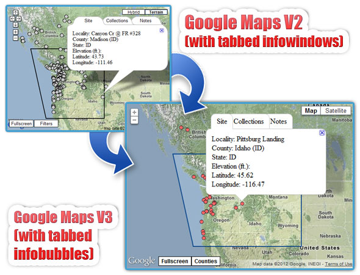

I was working on upgrading the PNWMoths map code from Google Maps V2 to V3. To anyone familiar with the library, a number of backwards-incompatible changes were made to slim down the library (mostly for the benefit of mobile devices). For the PNWMoths application, the removal of tabbed InfoWindows posed a problem.

As luck would have it, the removal of tabbed InfoWindows posed problems for others too, so someone wrote a tabbed InfoWindow extension called InfoBubble for Google Maps V3 and its included in the google-maps-utility-library-v3. In the course of the upgrade, I noticed a few bugs in the implementation that needed to be fixed for our application (and in turn needed to be committed upstream).
First step was to find a “How to Contribute” page – check.
Second step was to checkout the repository using SVN – crap.
Now I have to install and monkey about with SVN to contribute ~10 lines of trivial code. The problem is my workflow and skill-level: I don’t have SVN installed and I’m still relatively new to the VCS. But I want to look at this pragmatically, with a special focus on people developing JavaScript libraries.
The majority of the bugs in your project have probably already been fixed. The fixes are just strewn about hundreds of web servers. Speaking from experience, most web developers can’t be bothered to deal with SVN to add a tiny little bugfix to the central repository. Instead, they’ll fix the bug in the local copy of the file, use your library, and probably never look at the file again.
If you want open-source contributions (especially for JS libraries), reduce the barrier of entry. The explosion of github (and the lack of enthusiasm for Google Code and Sourceforge) is due entirely to lowering the barrier to submit and browse code. Github is the lowest barrier I know of, but I think even a lower barrier would be beneficial for many projects.